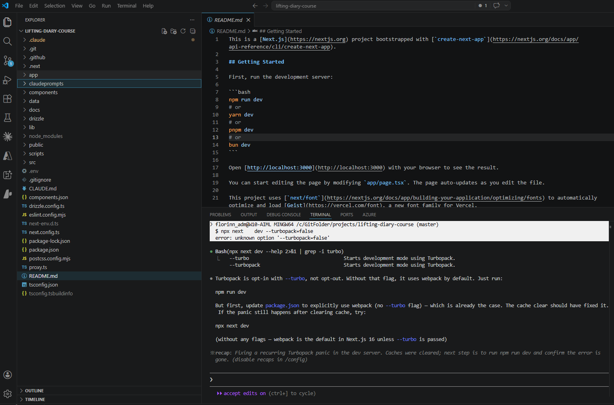
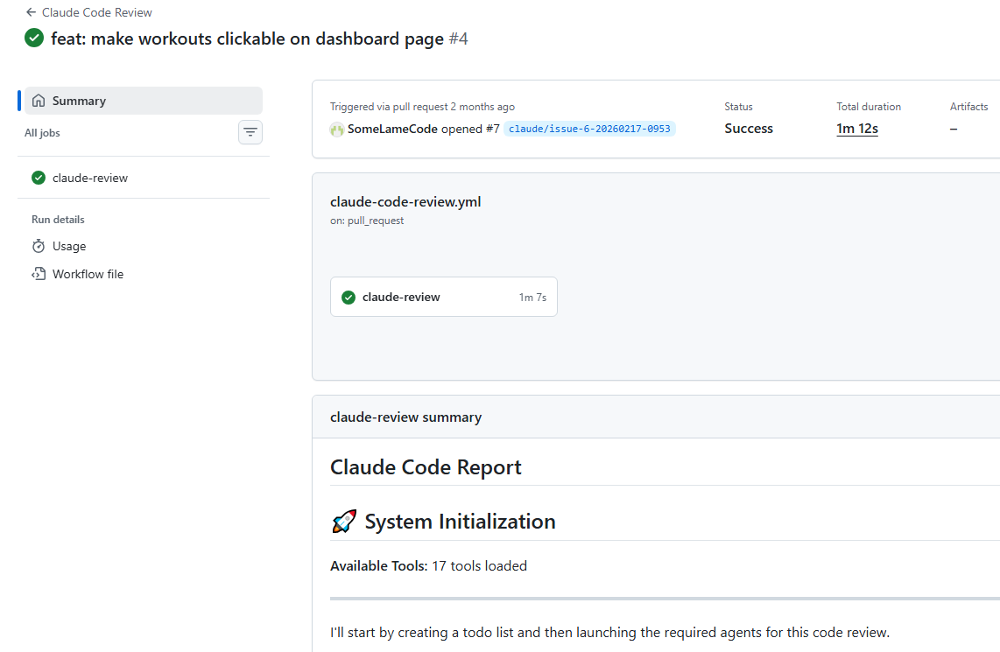

Building with Claude Code
Claude Code was the only editor used for this project — no manual code was written outside of it. What made the difference wasn't just asking Claude to write code; it was how the sessions were structured, and what constraints were in place before any prompt was sent.
The Three Modes
Claude Code has three operating modes, each with a distinct role in the workflow:
| Mode | When to use | Example from this project |
|---|---|---|
| Default | Exploration, questions, reading code, listing files | Asking whether sign-in could be a modal before committing to it; querying the Neon database via MCP |
| Plan | Design decisions — when you need Claude to think, not act | Designing the database schema; planning a branch merge strategy |
| Edit | Implementation — only after a plan is agreed | Writing pages, actions, components, schema migrations |
The discipline is the sequence: default → plan → edit. Jumping straight to edit mode produces code — but not necessarily the right code. Plan mode makes the intent explicit and catchable before any file is touched.

CLAUDE.md as a Session Contract
The repository's CLAUDE.md file told Claude Code what to know at the start of every session:
- Always read the relevant
/docsfile before generating any code — this was the single most important instruction - The app architecture (App Router, Server Components, path aliases)
- Key patterns (Server Components by default, strict TypeScript)
Without CLAUDE.md, each session starts cold. Claude might make choices that are internally consistent but inconsistent with prior sessions — using a different pattern for data fetching, or adding a component style that doesn't match the rest of the codebase. CLAUDE.md is the minimum viable memory across sessions.
Custom Slash Command: /merge-and-create-branch
A custom slash command was added to handle the branch lifecycle:
This single prompt planned and executed: merge the current branch into main, resolve any conflicts, and create a new feature branch. Without it, this is a multi-step git workflow that Claude has to reason about independently each time — with more room for mistakes. The custom command reduced the cognitive overhead and made branching a repeatable, reliable operation.
Prompt Patterns That Worked
1. Standards first, code second
Write the constraint document before asking for implementation. The /docs folder pattern: create data-fetching.md defining the rules, then implement data fetching. Claude will read the doc (because CLAUDE.md says to) and stay within the defined rules.
"Create a
docs/data-fetching.mdfile highlighting that ALL data fetching MUST be done via Server Components..." (Session 14 — written before a single query was implemented)
2. UI before data
Separate the UI scaffold from the data layer. Asking Claude to build a page with UI and data fetching in one prompt invites it to make assumptions about both. Asking for UI only first gives you a reviewable interface before any database logic is involved.
"Create a /dashboard page... ONLY generate the UI for this page. DO NOT generate any data fetching or server side code just yet. JUST focus on the UI." (Session 13)
3. Plan, then implement
For any non-trivial change — especially those involving multiple files or git operations — ask for the plan first and review it before saying "now implement."
"Give me a plan on how you would merge the dashboard-page branch into main then resolve any merge issues, and create a new branch called create-workout-page. Do not implement anything just yet." (Session 16 — review happened, then:) "Ok great. Now implement this plan."
4. @file references for debugging
When debugging, point Claude to the exact files involved. Vague bug descriptions produce vague investigations. File references focus the context window on what matters.
"@src/app/dashboard/page.tsx @src/app/dashboard/calendar-client.tsx — there is an issue with the calendar whenever I select a date, the previous date is selected..." (Session 15)
5. /clear at branch boundaries
The /clear command resets the context window. Used at the start of each new feature branch, it prevents assumptions from the previous feature from leaking into the next. Stale context is subtle — Claude won't flag it, it will just quietly make the wrong assumption.
MCP Integration: Neon Database
Mid-project, the Neon MCP server was added:
This allowed Claude to interact with the database directly — list tables, generate seed data, review it, and insert it — without leaving the editor or writing terminal commands. The seed workflow became:
- Default mode: "List all available tables within the liftingdiarycourse db on Neon"
- Default mode: "Generate example data for the above tables for user id [X]. Do not insert yet."
- Review the data in the response
- Default mode: "This looks great. Now insert all of that example data."
The review step between generation and insertion matters — it's the same principle as plan mode: agree before acting.
GitHub Actions: Claude at the CI/CD Level
Claude Code in the editor wasn't the only place Claude operated. Two GitHub Actions workflows were added mid-project:
- Claude PR Assistant — reviews pull requests automatically when opened, leaving comments on code quality, patterns, and potential issues
- Claude Code Review — triggered on push, performs a broader review of changed files against the project's standards
The evidence is in the branch names. By Feb 17, the busiest day of the project, branches like claude/issue-3-20260217-0953 were being created automatically — Claude picking up GitHub Issues and opening branches to work on them without a manual prompt session.
This extends the architecture from the editor into the repository itself. The same constraints that governed the editor sessions — the /docs standards, the CLAUDE.md contract — were now also available to the automated workflows. A Claude bot reviewing a PR against data-fetching.md standards is the same principle as a developer reviewing a PR against those standards; the document is the specification either way.
The broader picture
Editor (Claude Code) + CI/CD (GitHub Actions) + documentation contracts (/docs/*.md) form a consistent layer across the entire development workflow — not just one tool, but a connected system where the same rules apply at every stage.
